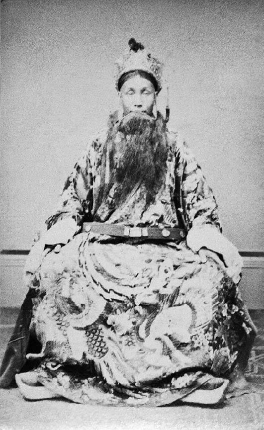
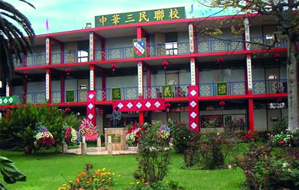
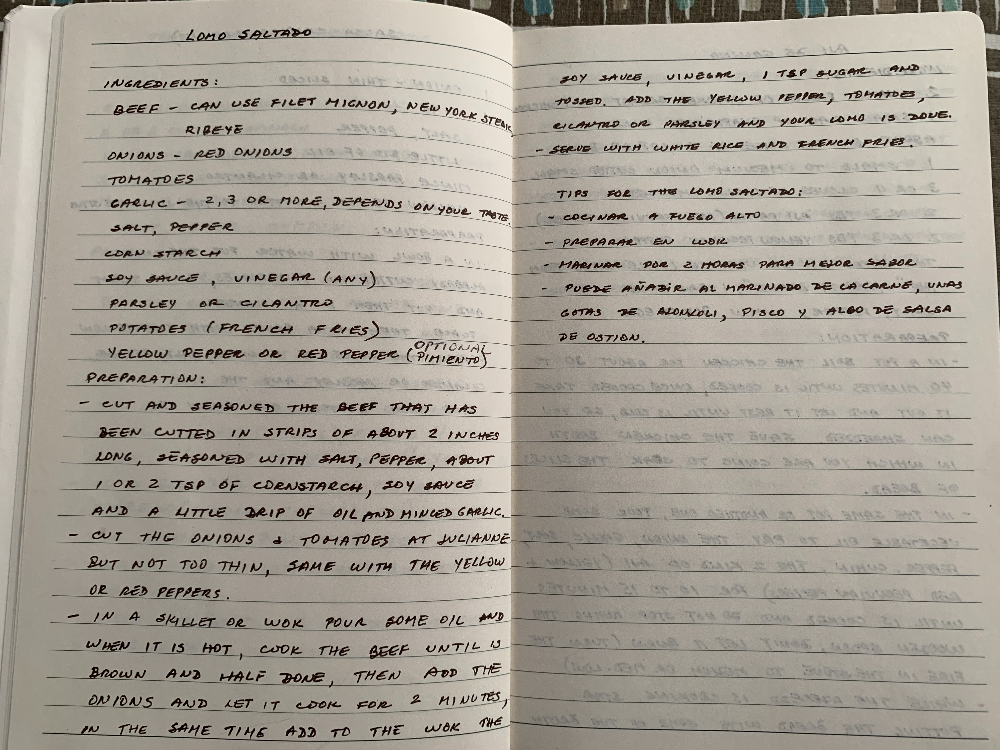

1849—1874
Chinese laborers working the guano pits during the Coolie Trade

c. 1863—1873
Chinese Theater actor in Lima, Peru

1900
Chinese laborers picking cotton

c. 1910—1920
Second-wave Chinese immigrants celebrate a wedding

1921
Interior of Kuong Tong, the first chifa in Calle Capón

1924
Students of Chung Wa, the first Chinese-Peruvian school

1924
Images of La Fuente China inauguration (Mundial Magazine)

1931
First issue of Revista Oriental

1942
Original Wong store founded by Erasmo Wong

c. 1960s
Facade of Colegio Chino Peruano Diez de Octubre (Chinese Peruvian School Tenth of October)

c. 1999—2004
View of Calle Capón, the main street of Lima's Barrio China (Chinatown)

2021
My grandmother's recipe for lomo saltado

c. 2021—2023
Main gates of Lima's Barrio China
OVERVIEW
Tusán refers to Peruvians of or with Chinese descent. Between 1849 and 1874, up to 100,000 Chinese men emigrated
to Peru as indentured servants/contract laborers known as
Coolies
to replace slave labor.
Most worked on plantations or on railroads. The most unfortunate were sent to work in the guano
pits, where they were forbidden to leave the islands. [...] It involved grueling physical labor, using picks and shovels
to extract the guano from the mountainous deposits, loading wheelbarrows and sacks, and transporting the manure to chutes
for loading boats. Each worker was expected to load five tons of guano each day. Behavioral infractions and failure to
meet daily quotas were met with physical punishment. The work was exhausting; the stench was overwhelming; and guano dust
coated everything, penetrating the eyes, noses, and mouths of the workers.'
By the end of the 19th century coolie trade, Chinese male workers had no option but to settle in Peru and began families with local women.
Free Chinese migrant merchants and entrepreneurs moved to Peru in the late 19th and early 20th centuries, as well.
Despite their contributions to the Peruvian economy, Chinese immigrants continued to face discrimination and were alienated from society.
Mixed Chinese-Peruvians were initially called injertos (transplants). Eventually, this term was replaced by tusán,derived from the Chinese word tusheng
meaning “local-born”. Replacing the negatively-intended injerto with tusán marked an important shift within the
Chinese-Peruvian community, establishing a sense of pride and community.
By carving out their own place in society,
establishing economic influence and vocal participation in the media, a new
generation of Chinese-Peruvians were able to overcome discriminatory disadvantages initiated by the coolie era. Today, Peru
continues to hold a unique relationship with Chinese immigrants and
Peruvian culture is deeply influenced by Chinese culture.